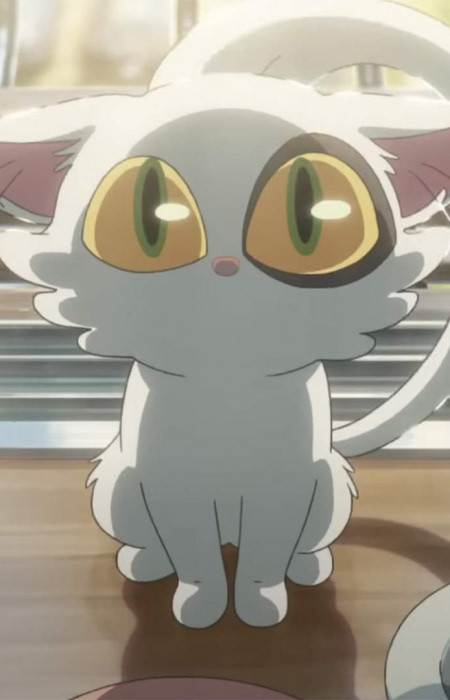

Informasi Anime
Genre: Adventure, Supernatural
Ditayangkan: Nov 11, 2022
Tahun Rilis: 2022
Jumlah Episode: 1
Durasi: 2 jam 1 menit
Studio: CoMix Wave Films
Platform Streaming:
Suzume no Tojimari
17 tahun‑an Suzume Iwato tinggal di Kyushu suatu hari ia bertemu seorang pemuda misterius yang sedang mencari “pintu”.
Karena penasaran, Suzume ikut dan tanpa sengaja membuka sebuah pintu magis. Akibatnya, kekuatan supranatural dilepaskan,
memicu potensi bencana besar.
Untuk memperbaiki kesalahan tersebut, Suzume bersama pemuda itu dan beragam keanehan seperti kursi hidup dan kucing
misterius memulai perjalanan keliling Jepang untuk “menutup pintu‑pintu” yang tersebar. Perjalanan ini membawa
mereka ke berbagai tempat: kota besar, pedesaan, bangunan tua sambil menghadapi bahaya supernatural serta beban
emosional yang berat.
Lewat petualangan, Suzume harus menghadapi trauma masa lalu dan rasa kehilangan, serta memilih antara menyerah atau
bertarung demi keselamatan banyak orang. Film ini menampilkan perpaduan antara fantasi, tragedi, dan harapan dengan
visual yang memukau, nuansa emosional yang dalam, serta tema air mata sekaligus keindahan.
Character & Voice Actor

Suzume Iwato
Hara Nanoka


Souta Munakata
Matsumura Hokuto


Daijin
Yamane Ann


Tomoya Serizawa
Kamiki Ryunosuke